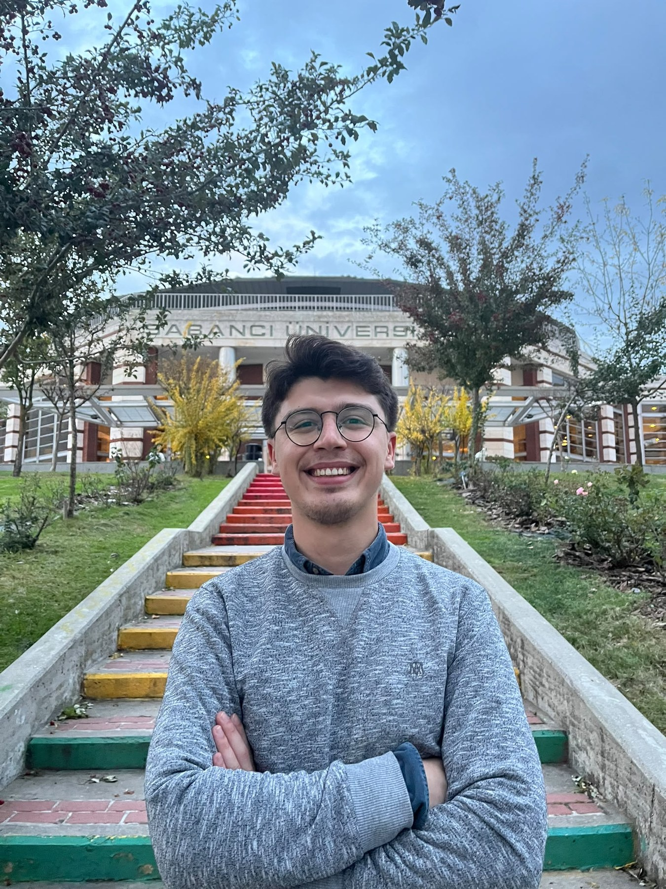

Democracy in Motion: Tracing Conceptual Drift in Turkish Newspapers
Examines changes in newspaper framing of democracy in Turkey between 2010 and 2026, drawing on approximately 2.7 million articles from six newspapers.
MA thesis · In progressPOLITICAL SCIENCE · SABANCI UNIVERSITY
I am a political science MA student at Sabancı University. My research interests lie in comparative politics, political behaviour, political parties, political economy, public opinion, and political communication. I am particularly interested in how democracy is understood, represented, and contested by political actors and citizens.
Explore my researchGitHub ↗
SABANCI UNIVERSITY · ISTANBUL01 / RESEARCH
I study political meaning, democratic attitudes, and the relationship between political communication and citizen behaviour.
How do political actors, media institutions, and citizens define and contest democracy?
How do citizens understand democracy, evaluate political performance, and form political attitudes?
How do parties, political communication, and political-economic developments shape democratic competition?
02 / ACADEMIC WORK
Selected publications, works in progress, and research projects. Verified citations and links can be added as your work becomes available.
Examines changes in newspaper framing of democracy in Turkey between 2010 and 2026, drawing on approximately 2.7 million articles from six newspapers.
MA thesis · In progressPublication details will be added here. No unverified or unpublished work is presented as a publication.
03 / NOTES & COMMENTARY
Occasional writing on politics, democracy, public opinion, political communication, and research methods.
Reflections on ongoing research questions and emerging findings.
Commentary on democratic debates and public discourse.
Notes on computational methods, text analysis, and research practice.
New posts will appear here as they are published.
04 / TEACHING
I am interested in teaching political science through conceptual clarity, empirical evidence, and engagement with contemporary political developments.
This section will include my teaching experience, courses, responsibilities, and teaching materials.